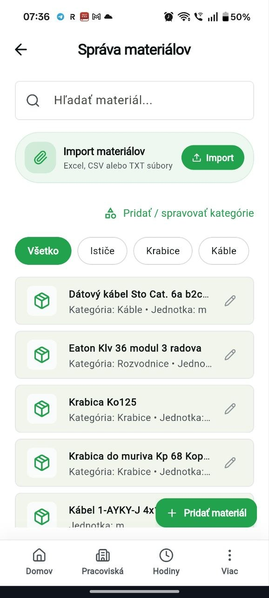
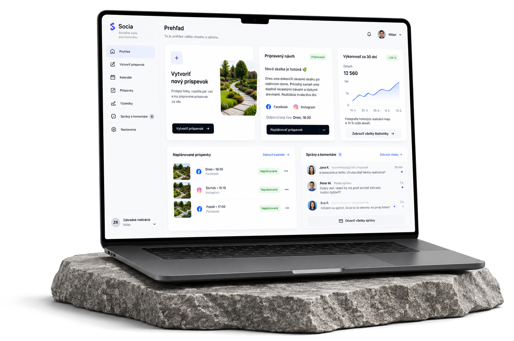
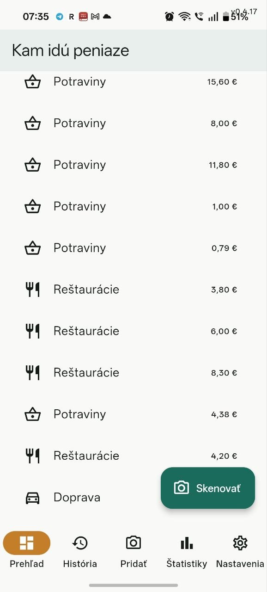
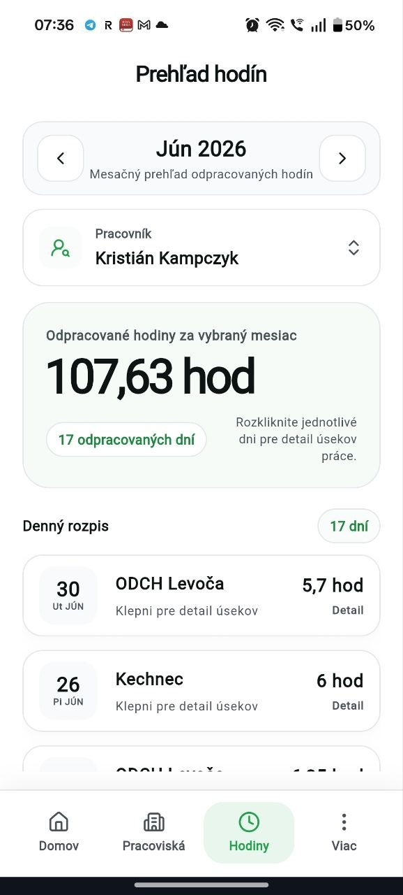
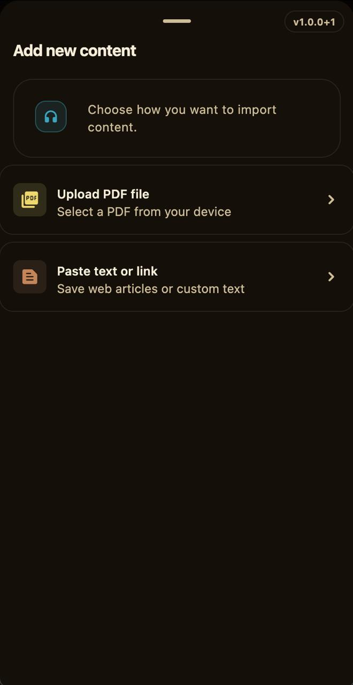
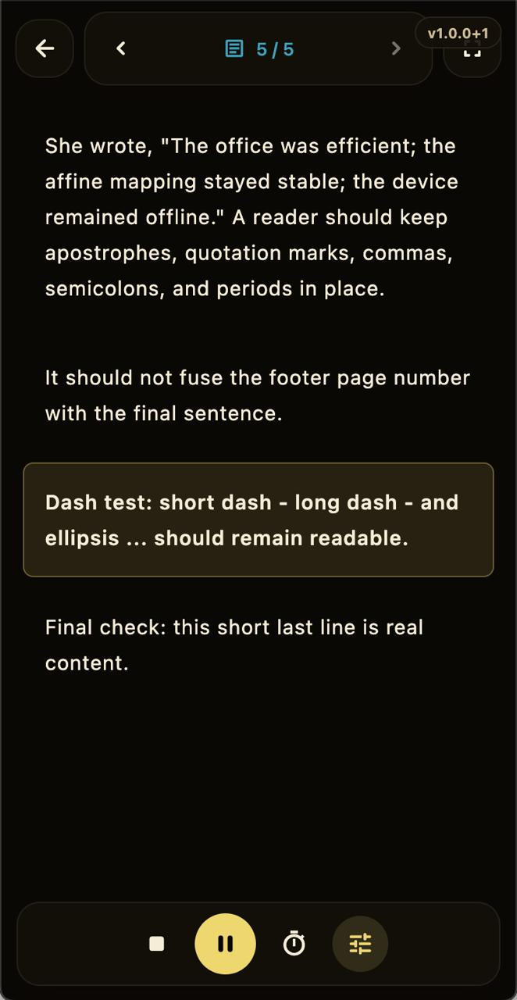
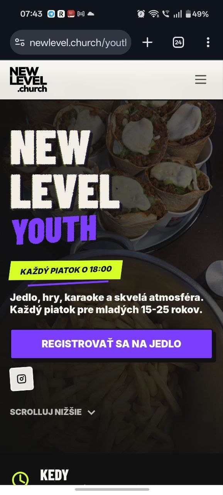
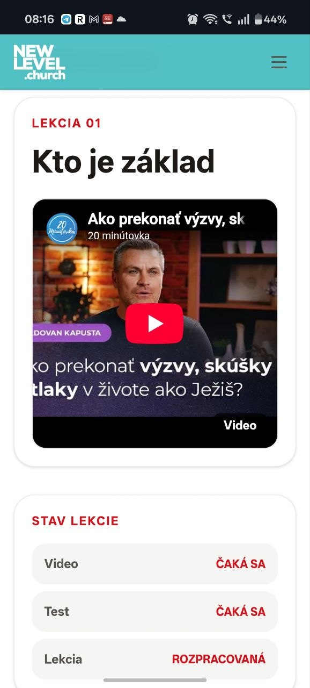
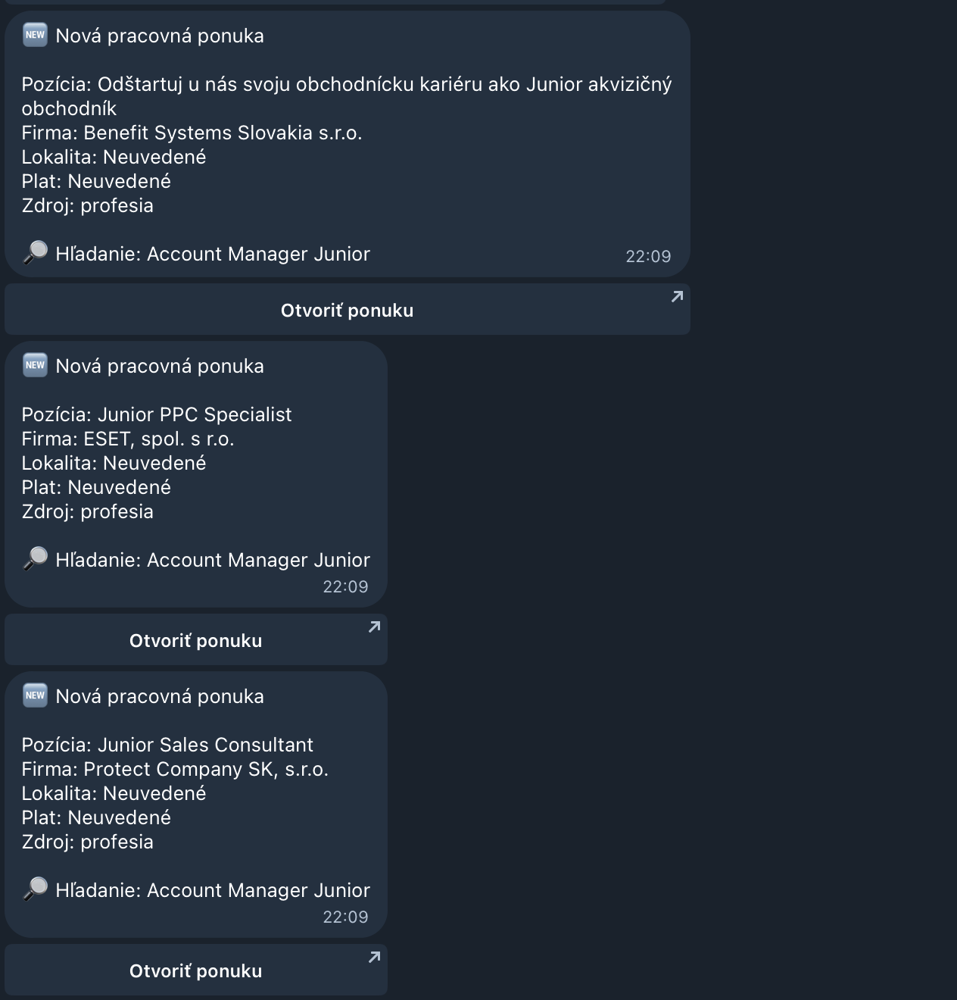
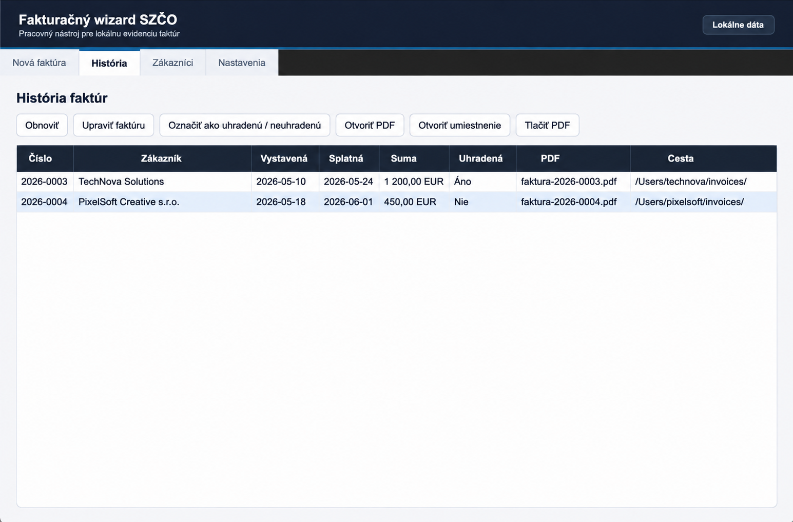

Produkty,
ktoré fungujú
v praxi.
Weby · aplikácie · automatizácie · riešenia na mieru


Výdavky pod kontrolou za pár sekúnd
Jednoduché zapisovanie, kategórie a jasný prehľad o tom, kam idú peniaze.
Bločky, bankové výpisy, história aj štatistiky na jednom mieste.

Všetky siete na jednom mieste
Príspevok pripravíte raz a jedným klikom ho zverejníte na všetky siete.
Obsah, hashtagy, správy, štatistiky aj dosah bez zbytočného preklikávania.
Mirela — evidencia práce a materiálov
Mobilný nástroj pre pracovníkov, pracoviská, materiály a odpracované hodiny.
Jedna aplikácia namiesto roztrúsených tabuliek a manuálnej evidencie.

Čítačka PDF a vlastného obsahu
PDF, vložený text alebo odkaz v jednoduchom režime čítania.
Rýchly import a sústredené tmavé rozhranie bez rušivých prvkov.


New Level Youth web
Mobilne ladený web pre mládežnícke stretnutia s výraznou hero sekciou.
Návštevník hneď vie, kedy sa akcia koná, pre koho je a ako sa registrovať.


Vyhľadávač pracovných ponúk
Automatizovaný monitoring vybraných sektorov a okamžité správy s výsledkami.
Nové ponuky bez manuálneho preklikávania pracovných portálov.

Fakturačný wizard pre SZČO
Lokálna evidencia faktúr, zákazníkov a PDF výstupov bez zložitého systému.
História faktúr, stav úhrady aj cesta k súborom na jednom mieste.

Máte nápad,
ktorý si pýta
vlastné riešenie?
Napíšte mi. Spoločne nájdeme najbližší rozumný krok.